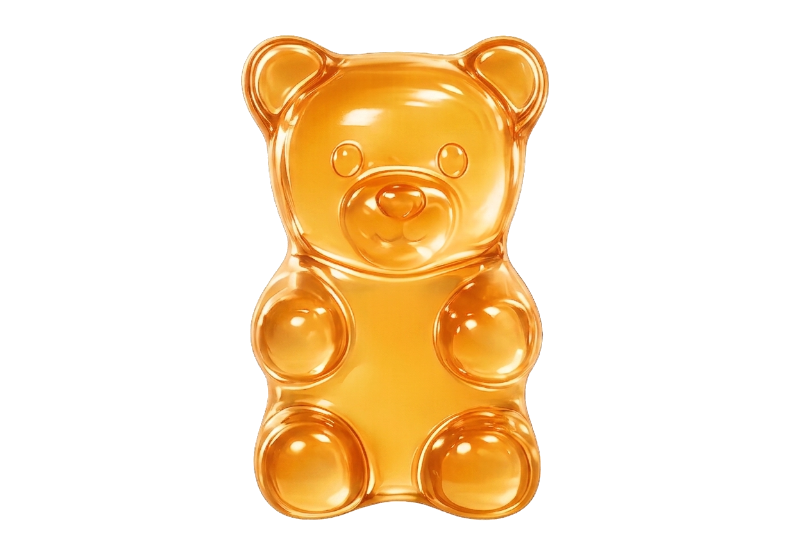

1. Você já foi diagnosticado por um médico como portador de diabetes?
Sim
Não
2. Qual é o seu tipo de diabetes diagnosticado?
Tipo 1
Tipo 2
Pré-diabetes
3. Com que frequência você costuma monitorar seus níveis de glicose no sangue (ex: em jejum, após as refeições)?
Muitas vezes
Algumas vezes
Poucas vezes
4. Você possui acompanhamento regular com um médico (endocrinologista ou clínico geral) para tratar sua diabetes?
Sim
Não
5. Você faz acompanhamento com um nutricionista para alinhar sua dieta com sua condição?
Sim
Não
6. Você já conversou com seu médico ou nutricionista sobre a possibilidade de consumir suplementos ou gomas específicas para diabéticos?
Sim
Não
7. Você faz uso diário de medicamentos orais ou insulina receitados para o controle da glicemia?
Sim
Não
8. Você sabe como ajustar a sua medicação atual caso ocorram oscilações (picos ou quedas) na sua taxa de açúcar?
Sim
Ainda não sei bem
9. No caso de gomas de rápida absorção, você foi orientado sobre a quantidade adequada a consumir para evitar episódios de hipoglicemia?
Sim
Não exatamente
10. Você compreende que essas gomas atuam apenas como um suporte para o seu tratamento e não substituem os medicamentos prescritos?
Sim
Não
11. Você está ciente de que o consumo excessivo ou sem orientação pode gerar alterações inesperadas na sua glicemia?
Sim
Não
12. Você sabe que é fundamental consultar seu médico sempre que houver mudanças na frequência ou intensidade dos seus sintomas e taxas?
Sim
Não exatamente
Por favor, preencha todos os campos
Caro usuário,
Este site comercializa gomas funcionais contendo compostos ativos com propriedades hipoglicemiantes (que auxiliam na redução do açúcar no sangue). O usuário declara estar ciente de que o produto possui ação metabólica ativa e deve ser consumido com responsabilidade.
Não substitui Tratamento: Todo o conteúdo deste site, bem como os produtos comercializados, possuem caráter estritamente informativo e suplementar. Eles não substituem consultas médicas, diagnósticos, exames ou medicamentos prescritos.
Necessidade de Orientação Profissional: É de responsabilidade exclusiva do usuário consultar o médico endocrinologista ou nutricionista antes de iniciar o consumo das gomas. O profissional deve avaliar a compatibilidade do produto com os medicamentos e insulinas já utilizados pelo paciente.
Risco de Hipoglicemia: O usuário assume total responsabilidade pelo monitoramento de sua glicemia. A empresa não se responsabiliza por episódios de hipoglicemia causados pelo consumo inadequado, superdosagem ou falta de ajuste na medicação habitual do usuário.
Questionário de Segurança: Para garantir a segurança dos consumidores, disponibilizamos um formulário de triagem de perfil. O usuário compromete-se a fornecer respostas verdadeiras e exatas sobre sua condição de saúde (como o tipo de diabetes).
Restrição de Uso: Perfis identificados como "Não Compatíveis" (como pacientes com Diabetes Tipo 1 ou sem acompanhamento médico) são expressamente orientados a não realizar a compra ou consumo sem autorização médica prévia e formal.
A empresa não será responsabilizada por quaisquer efeitos colaterais, reações adversas ou complicações de saúde decorrentes do uso do produto em desacordo com as instruções de rotulagem, com as advertências deste site ou sem a devida supervisão médica.
Para processar suas compras e garantir sua segurança biológica, coletamos duas categorias de dados:
Dados Cadastrais e de Faturamento (Necessários para a Compra): Nome completo, CPF (obrigatório para emissão de Nota Fiscal), endereço de entrega, e-mail, telefone e dados de pagamento (cartão de crédito ou PIX, processados em ambiente criptografado e seguro).
Dados Sensíveis de Saúde (Questionário de Triagem): Respostas sobre o tipo de diabetes, acompanhamento médico, histórico de controle glicêmico e percepção de riscos.
Dados Cadastrais: Utilizados estritamente para faturamento, emissão de notas fiscais, envio das mercadorias via transportadora/Correios e comunicações sobre o status do pedido.
Dados de Saúde: Utilizados exclusivamente para avaliar a compatibilidade do usuário com a fórmula hipoglicemiante das gomas, bloqueando ou alertando perfis de risco em prol da segurança do próprio paciente. Estes dados nunca serão utilizados para traçar perfis comerciais comportamentais ou publicidade invasiva.
Ao preencher o formulário de saúde e prosseguir com a navegação ou compra, você fornece seu consentimento expresso e destacado (conforme exigido pela LGPD para dados sensíveis) para que possamos processar essas informações com o único fim de proteger sua integridade física e saúde.
Compartilhamento Limitado: Seus dados cadastrais de envio são compartilhados apenas com as empresas de logística parceiras e intermediadores de pagamento seguros. Seus dados de saúde jamais serão vendidos, trocados ou compartilhados com terceiros.
Armazenamento Seguro: Adotamos protocolos rígidos de segurança digital (como criptografia SSL) para garantir que suas informações de saúde fiquem protegidas contra acessos não autorizados ou vazamentos.